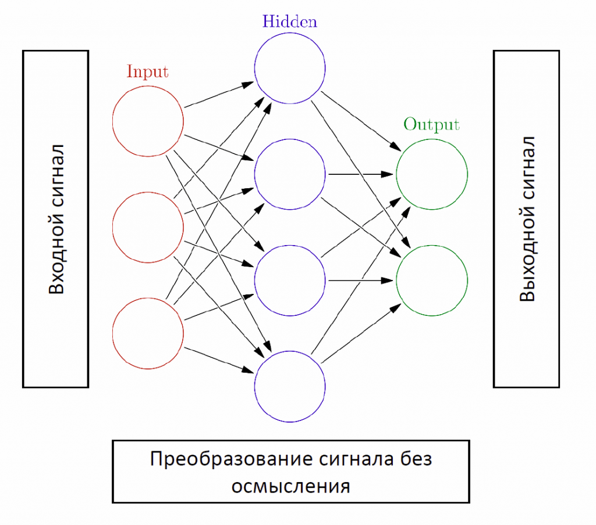

Урок 1. Введение
Популярность
Тема машинного обучения, интеллектуальных алгоритмов и искусственного интеллекта чрезвычайно популярна в наше время. Это легко можно увидеть, наблюдая за новостями на различных IT порталах.
Терминология
Разберемся с терминологией. Что такое искусственный интеллект, машинное обучение и искусственные нейронные сети. Как они связаны?
Начнем с самого важного, с искусственного интеллекта.
1. наука о создании интеллектуальных (умных) машин (чаще всего — компьютерных программ).
2. свойство интеллектуальной системы выполнять творческие функции, которые считаются прерогативой человека.
В обоих определениях выше присутствует словосочетание «интеллектуальная машина (система)». Поясню его подробнее. Интеллектуальная машина — система (например, программа), способная выполнять задачи, считающиеся творческими.
Другими словами искусственный интеллект и наука о творческих системах, и сама способность «творить» этих систем.
Теперь настала очередь разобраться с термином «машинное обучение».
Под обучающимися алгоритмами понимаются алгоритмы, которые меняются (обучаются) каким-то образом в зависимости от входных данных.
Машинное обучение — очень обширная область знаний. Можно ведь по-разному определять слово «обучение» и каждый раз получать интересные результаты. Однако среди множества парадигм и подходов в машинном обучении выделяется одна очень интересная область — искусственные нейронные сети.
Среди множества вариантов обучающихся алгоритмов особенно выделяют нейросети
Именно технологии ИНС я буду обучать вас на этом сайте. В дальнейшем искусственные нейронные сети я буду называть просто нейронными сетями.
В целом об ИНС
Теперь в самых общих чертах разберемся с такими понятиями, как искусственная нейронная сеть и искусственный нейрон. Более фундаментально мы разберем эти понятия в следующих главах.
Эти знания необходимы для того, чтобы вы поняли преимущества нейронных сетей и спектр задач, которые они могут решать. Без приблизительного понимания технологии рассказ будет выглядеть, как демонстрация фокусов зрителям.
Зададимся вопросом. А что такое биологические нейронные сети? Если вы помните школьную программу по биологии, то ответ скорее всего сразу пришел вам в голову. Вообще-то «голова» и есть один из ответов на этот вопрос. Точнее не голова, а наши мозги. Мозги есть не только у нас, но и у многих других животных. У животных без мозгов (медузы, черви) все равно есть нервная система.
Получается наш мозг представляет собой сложнейшую биологическую нейронную сеть, которая принимает информацию от органов чувств и каким-то образом ее обрабатывает (узнавание лиц, возникновение ощущений и т.д.).
Теперь задумаемся. А из чего состоит нервная система или мозг? Ответ очевиден — из нейронов. Наш мозг, как и любая биологическая нейронная сеть, состоит из совокупности нейронов. Строение биологического нейрона показано на рисунке ниже.

Как можно заметить, биологический нейрон — чрезвычайно сложная система. Во многом это объясняется тем, что нейрон, помимо обработки сигнала (основное его назначение), вынужден еще выполнять кучу других функций, поддерживающих его жизнь. Более того, сам механизм передачи сигнала от нейрона к нейрону тоже очень сложный с биологической и химической точки зрения.
Нам нужна модель. Нас не волнуют вопросы жизнедеятельности нейрона. Смело убираем все, что с этим связно: ядро, мембраны, рибосомы и все-все-все. В любом случае, мы будем его программировать и умереть он просто не сможет.
В итоге имеем гипотетическую структуру, которая принимает сигнал, преобразует его (примерно так, как это делают настоящие нейроны), и передает другим нейронам (которые делают тоже самое). Такую гипотетическую структуру и называют искусственным нейроном.
(Artificial neuron) — упрощенная модель биологического нейрона.
Биологические нейронные сети представляют собой совокупность биологических нейронов. Однако в таких сетях тоже много ненужных для обработки сигнала аспектов (системы очистки от продуктов жизнедеятельности и т.д). Плюс ко всему нейронов в биологической нейросети очень много.
Опять упрощаем: убираем ненужные химические и биологические компоненты, а также уменьшаем количество нейронов.
Таким образом логично приходим к другому определению ИНС.
Почему нейросети работают?
Рассмотрим на ознакомительном уровне один важный вопрос. Почему нейросети работают (то есть могут решать задачи)? Ответ на этот вопрос не самый очевидный.
Самый частый вариант ответа: каждый нейрон по-своему преобразует сигнал, ну а так как таких нейронов много (миллиарды), то сигнал на входе преобразуется в правильный сигнал на выходе.
Это почти правильный ответ. Тонкость заключается в том, что все нейроны работают по одному алгоритму. Другими словами внутри любого нейрона сигнал обрабатывается всегда одинаково.
Но тогда ведь нет никакого индивидуально преобразования! А значит ответ сети всегда один и тот же. На самом деле, вся суть кроется в так называемых синапсах.
На рисунке ниже цветом выделены синапсы (в центре сверху на картинке можно увидеть один из синапсов в деталях). Красный цвет — главный нейрон на картинке. Желтый цвет — выходы соседних нейронов.
Длинный отросток главного нейрона справа является его выходом. Можно заметить, что конец этого отростка соединен с двумя входами другого нейрона, которого мы уже не видим.
У каждого биологического нейрона тысячи входов. Каждый из них соединен с выходами других нейронов. Значит, имеем тысячи синапсов на каждый нейрон. Помножим это число на миллиарды нейронов в биологических нейросетях (в головном мозге 85 миллиардов нейронов!). Получаем огромное число синапсов.
Суть в том, что каждый синапс индивидуален. Он может либо усиливать, либо ослаблять проходящей через него сигнал. Более того, с течением времени синапсы могут меняться, а значит будет меняться характер изменения сигнала. Если правильно подобрать параметры синапсов, то входной сигнал, после прохода через нейронную сеть, будет преобразовываться в правильный выходной сигнал.
Именно так и происходит преобразование множества входных сигналов в верное решение на выходе.
Уровень сложности нейросетей
Выше я уже говорил, что мы уменьшаем количество нейронов для искусственных нейронных сетей (миллиарды нейронов моделировать мы не можем). Насколько сильно мы уменьшаем это количество? Внимание на картинку ниже.
Это картинка достаточно условная, но хорошо отражает степень упрощения. По горизонтальной оси у нас идет количество синапсов (воспринимайте это как сложность сети). По вертикальной сети отмечена скорость работы систем.
Серый квадрат слева внизу — возможности обычных компьютеров (но не компьютерных реализаций нейронных сетей!). Далее идут два эллипса. Они представляют собой современные программные (а иногда и аппаратные) реализации искусственных нейронных сетей.
Как видите, до человека еще достаточно далеко. Более того, здесь используется логарифмическая шкала. Не вдаваясь в подробности можно сказать, что даже очень маленькое перемещение по диагонали на данном графике означает увеличение в миллионы раз количества синапсов и скорости работы.
Где используются нейросети?
Вы уже познакомились с искусственными нейронными сетями. Теперь обсудим критически важный вопрос: а где и для чего их вообще используют?
Начнем издалека. Вообще говоря, нам нужно решать разные проблемы. Компьютерные программы — один из способов решать проблемы.
А их бесконечно много. Вместо перечисления каждой из проблем можно ввести их классификацию. Будем различать проблемы по условной сложности (простая, средняя и высокая сложности) и по тому, знаем ли мы, как ее решать (точно знаем, приблизительно знаем, вообще не знаем).
Проблемы малой/средней сложности, которые точно известно, как решать:
- решить простое уравнение
- вывести на экране окно программы
- распечатать документ на принтере
Такие задачи решаются с помощью обыкновенных компьютерных программ. Ничего сложного и необычного. Никаких проблем.
Проблемы малой/средней сложности, которые частично известно, как решать:
- простейшее прогнозирование
- расчет погрешностей
- приближенное решение уравнений
Такие задачи можно решать при помощи специальных статистических методов.
Проблемы высокой сложности, которые непонятно, как решать:
- распознавание образов
- распознавание речи
- сложные прогнозы
На этом типе задач я остановлюсь подробнее.
Вот вы идете по улице. Вокруг вас много прохожих. Вы смотрите на них и моментально распознаете лица. Этот процесс не вызывает у вас никаких вопросов. Вы просто очень хорошо натренировались его совершать.
А теперь вы поставили себе задачу — написать компьютерную программу, которая по данной картинке распознает лица. Можно даже проще. Попробуйте накидать приблизительный алгоритм распознавания лиц на бумаге. У вас ничего не выйдет. И все потому, что вы на бессознательном уровне распознаете лица, а бессознательное вы контролировать не можете. Делаете, но не знаете как.
Помимо распознавания лиц существует еще куча других задач, которые просто непонятно, как решать.
И тут на помощь приходят нейронные сети. Являясь моделью биологических нейросетей, они могут решать подобные задачи.
Эта способность нейросетей и сделала их такими популярными. Нейросети можно обучить играть в игры, узнавать голос, прогнозировать рост/падение цен. Их можно научить всему, что мы делаем бессознательно!
Преимущества нейронных сетей
Помимо возможности решать новый класс задач нейросети обладают рядом значительных достоинств.
Понять, откуда они берутся, очень просто. Все плюсы нейронных сетей являются следствиями плюсов биологических нейронных сетей, так как саму модель обработки информации мы практически не меняли (при упрощении).
Отсюда очень просто объяснять преимущества ИНС, просто выводя их из свойств биологических нейросетей.
Устойчивость к шумам входных данных
Представьте себе людей на пешеходном переходе. Вы без труда окидываете всех их взглядом и легко различаете лица. Однако рассмотрим эту картину подробнее. Помимо непосредственно лиц на изображении есть еще и асфальт, одежда людей, машины, сфетофор, сумки. И вся это ненужная (шумовая) информация тоже подается нам в глаза!
Но мы абсолютно не обращаем на нее внимания, мастерски различая лица. Как я уже говорил выше, мы просто натренировались их различать. Важная часть тренировки — игнорирование шумовых сигналов.
Это качество есть и у искусственных нейронных сетей. После тренировки они способны не обращать внимание на входы, на которые подаются шумовые данные.
Адаптация к изменениям
Представьте, что вы математик. Вы решаете уравнения с помощью каких-то компьютерных программ.
Сегодня утром ваша программа обновилась: в нее был добавлен новый функционал, а интерфейс немного изменился.
Вам потребуется совсем немного времени, чтобы самостоятельно разобраться в изменениях, а после этого вы все также продолжите решать уравнения, но уже используя добавленный функционал. Этот пример показывает, что при небольших изменениях среды вы способны адаптироваться (если бы программа полностью изменилась, сами вы бы уже не разобрались).
Опять же это свойство биологических нейросетей распространяется и на ИНС. Пусть у вас есть нейронная сеть, которая прогнозирует рост/падение цен на бирже. Однако постепенно, день за днем, ситуация на рынке меняется. Если бы ваша сеть не адаптировалась к этим изменениям, то она перестала бы давать правильные ответы уже через неделю. Но искусственные нейронные сети, обучаясь на данных, каждый раз подстраиваются под среду.
Отказоустойчивость
Иногда случается, так, что в результате наследственных заболеваний или других проблем человеку приходится удалять половину головного мозга. Такие случаи действительно бывают. Поразительно то, что за определенное время оставшееся полушарие берет на себя функции исчезнувшего. Может быть не в полной мере, однако система (человек) продолжает функционировать.
Это свойство проявляется и у искусственных нейронных сетей. Они могут выдавать корректные результаты даже при значительном повреждении составляющих их компонентов.
Сверхвысокое быстродействие
Компьютер выполняет команды последовательно. Однако в голове человека каждый нейрон является маленьким процессором (который принимает сигнал, преобразует его, и подает на выход). И таких процессоров у нас в голове миллиарды. Получаем гигантскую сеть распределенных вычислений. Сигнал обрабатывается нейронами одновременно.
Это свойство потенциально проявляется и в искусственных нейронных сетях. Если у вас многоядерный компьютер, то это свойство будет выполняться. Для одноядерных компьютеров никакой разницы заметно не будет.
Недостатки нейронных сетей
Возможно у вас возникло ложное ощущение, что нейронные сети вот уже сейчас заменяют компьютеры. Можно выбрасывать свои системные блоки и приобретать новомодные нейрокомпьютеры.
Однако это не так. У нейронных сетей есть ряд серьезных недостатков, которые тоже можно вывести из биологических нейронных сетей.
Стоит заметить, что нейронные сети, несмотря на широкий спектр задач, которые они могут решать, все же остаются лишь полезным дополнительным функционалом. На первом месте всегда стоят компьютерные программы.
Замечательная новость заключается в том, что интегрируя обычные программные алгоритмы и нейронные сети можно почти полностью избавиться от всех потенциальных недостатков.
Перечислим их.
Ответ всегда приблизительный
Начнем с человеческого мозга.
Взгляните на фотографию ниже и попытайтесь понять, что на ней написано. Скорее всего, больших затруднений данное задание у вас не вызовет.
А теперь представьте себе, как сложно было бы распознать буквы в прямоугольниках по отдельности, без остальной записи.
Вы этого не замечаете, но на самом деле вы строите что-то типо таблички вероятностей у себя в голове и говорите, что, скорее всего (бессознательно выбрали наиболее вероятный результат), во 2 прямоугольнике написано «но». В случае же первого прямоугольника вы говорите, что, непонятно, что там (вероятности почти равны), но, мне кажется (выбираете случайным образом), что там написана буква «о».
Такая же проблема есть и у искусственных нейронных сетей. Вы никогда не будете получать точные ответы. Хорошая новость заключается в том, что редко встречаются задачи, в которых надо применять ИНС и одновременно получать точные ответы.
Принятие решений в несколько этапов
Связь с человеческим мозгом тут не сильно прослеживается в силу того, что мозг – супер сложная нейросеть и за счет свой сложности он может преодолеть этот недостаток.
Нейроны искусственной нейросети, в общем случае, не зависят друг от друга. Они просто получают сигнал, преобразуют его и отдают дальше. Они не смотрят друг на друга и, в зависимости от нейрона-соседа, меняют свои синапсы. Отсюда следует, что нейронная сеть может решать задачу только в один заход, залпом.
Поэтому совершенно бесполезно просить нейросеть доказать теорему. Там требуется цепочка последовательных шагов.

Наш мозг справляется с этой задачей благодаря тому, что он состоит из огромного количества маленьких нейросетей, каждая из которых может выполнять свой шаг. Более того, мы можем использовать и другие знакомые нам абстракции в помощь. У искусственной нейросети никакой помощи нет.
Вычислительные задачи
Этот недостаток искусственных нейронных сетей в какой-то степени является следствием двух предыдущих недостатков.
Обратите внимание на картинку ниже. Как заставить сеть провести эти преобразования?
Первая проблема – очередность. Надо каким-то образом, используя только входы сети, указать ей какая часть выражения находится под корнем, а какая часть находится слева от знака равенства. Да и как передать сам знак равенства?
Предположим, что вы каким-то образом смогли доставить эти данные в сеть
Вторая проблема – последовательные шаги. Уже описанный выше недостаток.
И вишенка на торте – невозможность выдачи точных результатов. Это можно представить себе следующим образом. Вы учите нейросеть:
– 2 + 3 = ?
= 983
– Неправильно! = 5.
2 + 3 = ?
= 5
– Правильно!
2 + 4 = ?
= 5
– Неправильно! = 6.
2 + 4 = ?
= 5.5
И так будет происходить всегда.
Выводы
В этой главе вы узнали, что такое ИНС, где они используются, какие у них преимущества, какие недостатки. Вы теперь представляете, что такое искусственный интеллект и машинное обучение.
Вопросы и задачи
Основы очень важны для дальнейшего понимания материала. Обязательно добейтесь четкого ответа на все нижеприведенные вопросы!